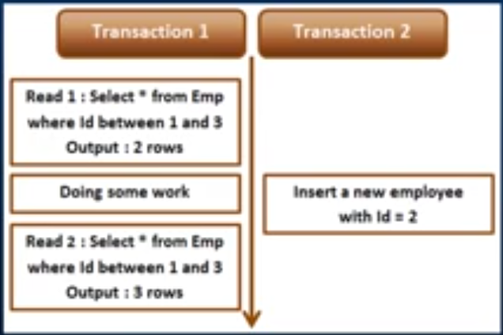

Overview
SQL Server supports several transaction isolation levels that determine the visibility of changes made by one transaction to other concurrent transactions. Each isolation level balances between consistency and concurrency, affecting several phenomena. Choosing the appropriate isolation level depends on the specific requirements for data consistency and the acceptable level of concurrency for your application.
- Dirty Read
- Reads uncommitted changes.
- A dirty read happens when one transaction is permitted to read data that has been modified by another transaction that has not yet been committed.
- In most cases, this would not cause a problem. However, if the first transaction is rolled back after the second reads the data, the second transaction has dirty data that does not exist anymore.
- Lost Update
- Happens when two transactions read and update the same data.
- Happens on Read Uncommitted and Read Committed Isolation Level.
- Non Repeatable Read - Data read twice may differ if another transaction modified it in between.
- Phantom Read - INSERTed rows can appear in subsequent reads.

| Isolation | Description | Dirty Reads | Lost Update | Non Repeatable Reads | Phantom Read | Use Case |
| Read Committed | Default isolation level in SQL Server. Transactions cannot read data that is being modified by other transactions until it is committed. | X | ✓ | ✓ | ✓ | General-purpose transactions where a balance between data consistency and concurrency is needed. |
| Read Uncommitted | This is the least restrictive of all the isolation level. Allows transactions to read data that has been modified but not yet committed by other transactions. Same as WITH(NOLOCK) hint. |
✓ | ✓ | ✓ | ✓ | Scenarios where high performance is critical and data inconsistencies can be tolerated, such as in reporting systems. |
| Repeatable Read | Ensures that if a transaction reads a row, no other transaction can modify that row until the first transaction completes. Basically holds the shared lock until end of transaction. | X | X | X | ✓ | Scenarios where repeated reads of the same data must return the same results, such as in financial applications. |
| Serializable | The strictest isolation level. This will place a range lock which prevents other transactions from inserting new rows within that range. Ensures complete isolation from other transactions, preventing other transactions from inserting, updating, or deleting rows that would affect the result set. | X | X | X | X | Critical transactions where complete consistency is required, such as in bank transfers. |
| Snapshot | Ensures complete isolation from other transactions, preventing other transactions from inserting, updating, or deleting rows that would affect the result set. | X | X | X | X | Applications that require consistent reads without blocking writes, such as OLTP systems. |
Scenarios
- Read Committed
- Consider a scenario where we need to ensure data consistency while reading from a database, but we also want to allow for a reasonable level of concurrency.
- There is a record in a table that has a value 100.
- Transaction 1: Updates the value into 150 but transaction is not yet committed yet.
- Transaction 2: Reads the value and returns the value 100.
- If Transaction 1 committed, Transaction 2 returned the inaccurate result. However, if Transaction 1 rolled back, Transaction 2 returned an correct result.
- Read Uncommitted
- Consider a scenario where you have a reporting application that generates real-time reports from a large database. The data in this database is frequently updated, and high read performance is more critical than absolute consistency for the report generation.
- There is a record in a table that has a value 100.
- Transaction 1: Updates the value into 150 but transaction is not yet committed yet.
- Transaction 2: Reads the value and returns the value 150.
- If Transaction 1 committed, Transaction 2 returned the correct result. However, if Transaction 1 rolled back, Transaction 2 returned an inaccurate result.
- Repeatable Read
- Consider a scenario where maintaining a consistent view of data throughout a transaction is crucial.
- A transaction involves viewing a value and then updating it afterwards.
- If the transaction come into the point that it will need to read again the value, it should still be the same.
- Serializable
- Consider a scenario where strict data consistency and isolation are critical, such as in a ticket booking system for a concert.
- There is a record in a table that has a value 0.
- Transaction 1: Updates the value into 1 but transaction is not yet committed yet.
- Transaction 2: Reads the value but needs to wait for Transaction 1 until it commit or roll back.
- Transaction 2 will show result of the final value.
- Snapshot
- Consider a scenario where an online retail system needs to generate consistent reports while allowing concurrent updates to the database without blocking or being blocked by other transactions. This is ideal for this situation because it allows transactions to work with a consistent view of the data as it was at the beginning of the transaction, without being affected by other transactions.
- There is a table with 3 records.
- Transaction 1 reads the table (assuming it takes a minute to generate the result).
- Transaction 2 inserts new rows on that same table during processing of Transaction 1.
- Transaction 1 generates result without the inserted rows of Transaction 2 (and without blocking).
Repeatable Read vs. Serializable
Repeatable Read prevents only non-repeatable read. This isolation level ensures that the data that one transaction has read, will be prevented from being updated or deleted by any other transaction, but it does not prevent new rows from being inserted by other transactions resulting in phantom read concurrency problem.
Serializable prevents both non-repeatable read and phantom read problems. This isolation level ensures that the data that one transaction has read, will be prevented from being updated, deleted, or inserted by any other transaction.